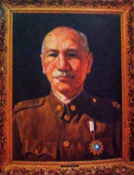

定調「藝術品」逃過一劫 李梅樹畫蔣公 高懸新北議會
顏玉龍｜中國時報／台北焦點∣2012年4月3日
民進黨在扁政府時代力推「去蔣化」，讓政府機關懸掛蔣公遺像的場景也不復見，唯獨新北市議會迄今仍懸掛畫家李梅樹的蔣公肖像油畫作品，當初被定調為「藝術品」而逃過一劫，但這幾屆議會均有綠營議員提案要求卸下，市議會也研議在第二屆時移至會史館保存。
前輩畫家李梅樹曾任台北縣議員，當年特別畫了國父及蔣公肖像的油畫，分別懸掛在議場前後。不過，雖然政治民主化，民進黨推動去蔣化，因為過去台北縣議會藍大於綠，得以「藝術品」而倖免於被卸下的命運。
新北市議會國民黨團書記長周勝考表示，蔣公肖像油畫屬藝術品，懸掛在議場內，不僅是對藝術家的尊重，也是對已故元首的尊敬，尤其他對國家貢獻卓著，不該因政治意識型態而刻意杯葛，各界應以「欣賞」的角度來看待這幅畫作。
新北市議會民進黨團總召何淑峯指出，議場內除了國父肖像外，不宜懸掛蔣公遺像，況且對台灣有貢獻的人很多，若真的要掛像，還有很多先人更值得掛。
民進黨議員張宏陸則表示，該幅油畫應以藝術品看待，不應該流於意識型態而反對。